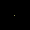
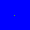
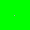
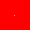

1. aşamada ekranın temiz olduğundan kesinlikle emin olunuz!
Masaüstü Sürümde:
F11 tuşuna basarak tarayıcıyı tam ekran moduna alınız; aşağı ok tuşu ile renkleri hareket ettirerek ekrandaki rengi inceleyiniz.
Mobil cihazlarda:
Ekranı tam ekran moduna alarak "aşağı" kaydırarak dokununuz.
Not: Hiçbir ölü piksel testi size ölü piksel olan noktayı işaretleyemez, bu sebeple testi gözünüz ile dikkatlice yapmalısınız. Yaparken hatayı bulan site değil gözlemci olan sizsinizdir. Bu dikkate alınarak yapılmalıdır!
Örnek Ölü Piksel Görüntüleri




Devoloped by aardadasdelenn.com 😉
Sonraki her renkte ekrana dikkatlice bakmaya başlayın.
Testi yaparken ortamda bulunan ışığa dikkate ediniz!
Ekranda aradığınız şey, nokta şeklinde farklı bir ton olması.
Gözünüzü dikkatlice açın ve ekranı kare kare incelemeye başlayın!
Tam ekrandan çıkabilirsiniz :)
Örneğin mavi rengi incelerken, nokta şeklinde farklı tona sahip bir piksel gördünüz mü?
Eğer gördü iseniz ekranınızda ölü piksel vardır.
Örnek Ölü Piksel Görüntüleri
Ana sayfaya dönmek için tıklayınız.